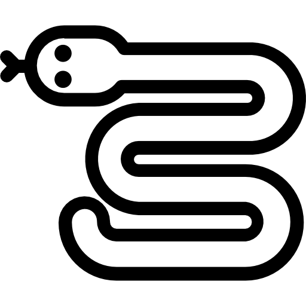

Portfolio
Mode de classement utilisé : ordre antéchronologique
Pour voir les différents livrables et autres fichier relatifs à ces projets n'hésiter pas à consulter ma page GitHub dédiée !
Projets datant du 2ème semestre de BUT
Intitulé du projet : Suivi du paiement des membres d'une association
Année : 2024/2025
Description succincte du projet :
Conception et création des algortithmes permettant de trier & de filter une liste, d'avoir une interface utilisateur, de suivre des paiements, de générer du contenu pour un mail de rappel ou une facture annuelle et de désinscrire des élèves à des cours en cas de non-paiement.
Cadre : Réalisé dans le cadre d’un projet universitaire en trinôme.
Technologies : Utilisation de Visual Studio Code, de Scene Builder et de diagrammes UML. Programmé avec Java & JavaFX.
Résultats : N/A (projet non terminé).
Compétences travaillées : Réaliser un développement d'application, Travailler dans une équipe informatique
Aptitudes personnelles développées : Difficile à dire car le projet a débuté il y a peu.
Intitulé du projet : Découverte de serveur Apache HTTP
Année : 2024/2025
Description succincte du projet :
Suivre des instructions afin de créer un serveur Apache HTTP fonctionnel, avec une possibilité de connexion et une présence de scripts PHP divers.
Cadre : Réalisé dans le cadre d’un projet universitaire en trinôme.
Technologies : Utilisation de Visual Studio Code, d'une machine virtuelle, de serveur Apache HTTP et de ses modules MySQL et PHP. Programmé avec du serveur Apache HTTP et les langages MySQL et PHP.
Résultats : N/A (projet non terminé).
Compétences travaillées : Gérer des données de l'information, Réaliser un développement d'application, Travailler dans une équipe informatique
Aptitudes personnelles développées : Le projet est bien avancé mais tout ce que je peux en dire c'est que j'ai appris comment créer un serveur Apache HTML.
 Intitulé du projet : Base de données sur les personnes souhaitant s'inscrire à l'IUT
Intitulé du projet : Base de données sur les personnes souhaitant s'inscrire à l'IUT
Année : 2024/2025
Description succincte du projet :
Traduire un schéma relationnel en scripts PostgreSQL, peupler la base de données et effectuer une analyse des données.
Cadre : Réalisé dans le cadre d’un projet universitaire en trinôme.
Technologies : Utilisation de Visual Studio Code, de SQLWorkbench et de Spyder. Programmé avec PostgreSQL et Python.
Résultats : N/A (projet non terminé).
Compétences travaillées : Gérer des données de l'information, Réaliser un développement d'application, Travailler dans une équipe informatique
Aptitudes personnelles développées : Le projet est peu avancé mais j'y ai mis en application ce que j'ai vu en cours, c'est à dire, comment concevoir une base de données à partir d'un cahier des charges et comment l'interroger.
 Intitulé du projet : Gestion du projet de Suivi du paiement des membres d'une association
Intitulé du projet : Gestion du projet de Suivi du paiement des membres d'une association
Année : 2024/2025
Description succincte du projet :
Rédiger une note de cadrage et une Spécification des Exigences du Logiciel (SEL) à partir d'un sujet, faire un diagramme des tâche, une matrice des responsabilités (RACI), une estimation des charges et deux diagrammes de Gantt (un prévisionnel et un réel).
Cadre : Réalisé dans le cadre d’un projet universitaire en trinôme.
Technologies : Utilisation de Project Libre.
Résultats : N/A (projet non terminé).
Compétences travaillées : Conduire un projet, Travailler dans une équipe informatique
Aptitudes personnelles développées : J'ai appris à faire une note de cadrage, une SEL et une estimation des charges. J'ai mis en application mes connaissances pour faire un diagramme de tâche, une matrice RACI et des diagrammes de Gantt.
Intitulé du projet : Création d'un team-building
Année : 2024/2025
Description succincte du projet :
Identification d'une entreprise ciblée, des valeurs de la journée, d'un espace géographique, d'activités et d'un budget. Création d'une infographie, d'une facture et d'une vidéo.
Cadre : Réalisé dans le cadre d’un projet universitaire en trinôme.
Technologies : Utilisation d'Open Camera et de DaVinci Resolve (pour filmer la vidéo et la monter).
Résultats : N/A (projet non terminé).
Compétences travaillées : Travailler dans une équipe informatique
Aptitudes personnelles développées : J'ai appris à faire une infographie et j'ai développé mon sens du travail en équipe.
Intitulé du projet : Portflio sous la forme d'un site internet
Année : 2024/2025
Description succincte du projet :
Réaliser un portfolio prenant la forme d'un site internet et contenant son CV, ses diplômes, une présentation de soi, le programme du BUT, ses informations de contact, ses projets, etc. Ce protfolio s'appuie sur des preuves et traces visibles sur ma page GitHub dédiée.
Cadre : Réalisé dans le cadre d’un projet universitaire en monôme.
Technologies : Utilisation de Visual Studio Code, d'HTML, de CSS et de Javascript.
Résultats : Le site que vous consultez actuellement.
Compétences travaillées : Réaliser un développement d'application
Aptitudes personnelles développées : J'ai appris à utiliser le format markdown et à faire des résumés de nombreux projets informatiques que j'ai entrepris.
Intitulé du projet : Algorithmes sur des nuages de point
Année : 2024/2025
Description succincte du projet :
Conception et création des algortithmes Knn (3 variantes à créer) et Kmeans en 3 étapes :
- étude du fonctionnement des algorithmes,
- programmation des algorithmes,
- rédaction d'un rapport sur le projet
Cadre : Réalisé dans le cadre d’un projet universitaire en trinôme.
Technologies : Utilisation de Visual Studio Code. Programmé avec le langage Python ainsi que les librairies sklearn, matpotlib, random et collection.
Résultats : Les algorithmes sont opérationnels et présentés dans le rapport.
Compétences travaillées : Réaliser un développement d'application, Travailler dans une équipe informatique
Aptitudes personnelles développées : N/A (cf. projets datant du lycée).
Projets datant du 1er semestre de BUT
 Intitulé du projet : Snake en C (partie 2)
Année : 2024/2025
Description succincte du projet :
Modification d’un jeu snake préexistant, en 3 étapes :
- création d’un déplacement automatique rudimentaire,
- amélioration du déplacement automatique,
- création d’un deuxième serpent
Cadre : Réalisé dans le cadre d’un projet universitaire en binôme.
Technologies : Utilisation de Visual Studio Code et du Terminal. Programmé avec le langage C.
Résultats : Le jeu a été fini avec succès. Il est opérationnel et présentable.
Compétences travaillées : Réaliser un développement d'application, Optimiser une application informatique, Travailler dans une équipe informatique
Aptitudes personnelles développées : J'ai appris à départager des tâches d'un projet informatique et à optimiser des déplacements (ceux du serpent en l'occurence) sur un plan 2D comportant des obstacles et des raccourcis.
 Intitulé du projet : Base de données sur le foot
Intitulé du projet : Base de données sur le foot
Année : 2024/2025
Description succincte du projet :
Création d’une base de données, en plusieurs étapes :
- analyse des besoins clients,
- rédaction des dépendances fonctionnelles,
- conception du diagramme de classes et
- création de la base de données
Cadre : Réalisé dans le cadre d’un projet universitaire en binôme.
Technologies : Utilisation de Visual Studio Code. Programmé avec le langage Tutorial D.
Résultats : La base de données répond aux exigences.
Compétences travaillées : Gérer des données de l'information, Travailler dans une équipe informatique
Aptitudes personnelles développées : J'ai mis en application mes connaissances sur les bases de données et ai créée une base de données répondant aux exigences du cahier des charges.
Intitulé du projet : Automatisation de conversion de fichiers
Année : 2024/2025
Description succincte du projet :
Conversion de fichiers, réalisé en plusieurs phases :
- analyse des fichiers, des modifications à effectuer et de leur faisabilité,
- conversion à la main,
- automatisation des conversions
Cadre : Réalisé dans le cadre d’un projet universitaire avec une équipe de quatre.
Technologies : Utilisation de Visual Studio Code, du Terminal et de Docker. Programmé avec du bash et du PHP-CLI.
Résultats : La conversion automatique est fonctionnelle.
Compétences travaillées : Réaliser un développement d'application, travailler dans une équipe informatique
Aptitudes personnelles développées : J'ai appris à utiliser PHP-CLI et ai approfondi mes connaissances sur Docker.
Intitulé du projet : Site internet des JO 2024
Année : 2024/2025
Description succincte du projet :
Création d’un site internet, réalisé en plusieurs phases :
- analyse des besoins clients,
- rédaction des livrables,
- réalisation d’une charte graphique,
- maquettage,
- conception du site et
- livraison des livrables
Nous étions 4 à faire le site. Chacun de nous s’occupait d’une page. Je m’occupais de la page epreuve.html.
Cadre : Réalisé dans le cadre d’un projet universitaire avec une équipe de quatre.
Technologies : Utilisation de Figma, Canva et Visual Studio Code. Programmé avec du HTML et du CSS.
Résultats : Le site a été fini avec succès. Il est présentable.
Compétences travaillées : Réaliser un développement d'application, Travailler dans une équipe informatique
Aptitudes personnelles développées : J'ai mis en application mes connaissances relatives au CSS et à l'HTML tout en interprétant des besoins clients.
Intitulé du projet : Snake en C (partie 1)
Année : 2024/2025
Description succincte du projet :
Création d’un jeu snake, en 5 étapes :
- création et mise en place d’un déplacement rudimentaire,
- déplacement avancé du serpent,
- création de collisions,
- collisions et déplacement avancés et
- création de la documentation
Note : Un cahier de tests est créé à chaque étape
Cadre : Réalisé dans le cadre d’un projet universitaire en monôme.
Technologies : Utilisation de Visual Studio Code et du Terminal. Programmé avec le langage C.
Résultats : Le jeu a été fini avec succès. Il est opérationnel et présentable.
Compétences travaillées : Réaliser un développement d'application
Aptitudes personnelles développées : J'ai appris à utiliser le langage C dans un projet de moyenne envergure.
Projets datant du lycée
Intitulé du projet : Modpack vanilla+ minecraft
Année : 2022/2023
Description succincte du projet :
Création d’un modpack minecraft où j'ai :
- supprimé certains crafts,
- caché certains items,
- supprimé certains minerais
- crée des crafts
- crée des items
Cadre : Réaliser en monôme dans le cadre d’un projet personnel en avril 2024.
Technologies : Utilisation (et découverte) de Visual Studio Code et de GitHub. Programmé avec json et zenscript. Utilisation de l’outil KubeJS.
Résultats : Le GitHub n’est pas à jour et j’ai perdu le code source mais le modpack est fonctionnel. J’ai changé d’outil pendant le projet pour pouvoir mettre le modpack sur un serveur en ligne car ledit serveur ne supportait pas KubeJS.
Compétences travaillées : Réaliser un développement d'application, Optimiser des applications informatiques
Aptitudes personnelles développées : J'ai appris à modifier des crafts, à créer des blocs et des items, à stopper la génération de certains minerais, à effacer des recettes de crafts et à cacher certains blocs/items pour que le joueur ne puisse percevoir leurs existences. J'ai aussi appris à changer de langage en plein milieu d'un projet, à utiliser KubeJs et à développer avec zenscript afin de réaliser les actions susmentionnées.
Intitulé du projet : Sudokus personnalisables
Année : 2023/2024
Description succincte du projet :
Création d’un programme permettant de générer et de résoudre des sudokus. Réalisé en 5 mois et incluant un carnet de bord, une définition du projet, un cahier de tests, des objectifs opérationnels et un mode d’emploi.
Cadre : Réalisé dans le cadre d’un projet scolaire en monôme via le CNED (projet annuel), en terminale.
Technologies : Utilisation du site en ligne ReplIt. Programmé en Python.
Résultats : Le solveur/générateur a été fini avec succès. Il permet de générer et de résoudre des sudokus de taille allant de 2*2 à 16*16 et n’étant pas forcément carrés.
Compétences travaillées : Conduire un projet, Réaliser un développement d'application
Aptitudes personnelles développées : J'ai appris à résoudre des sudokus de manière algorithmique et à faire des actions complexes sur des listes de listes.
Intitulé du projet : Programme de chiffrement
Année : 2022/2023
Description succincte du projet :
Création d’un programme permettant de chiffrer un texte via l’utilisation du carré de Polybe, du chiffrement de césar, du ROT13, du ROT47, du chiffre de Vigenère et d’un nombre conséquent de variantes de ces moyens de chiffrement. Réalisé en 5 mois et incluant un carnet de bord, une définition du projet, un cahier de tests, des objectifs opérationnels et un mode d’emploi.
Cadre : Réalisé dans le cadre d’un projet scolaire en monôme via le CNED (projet annuel) en première.
Technologies : Utilisation d’un site en ligne dont j’ai oublié le nom. Programmer avec Python.
Résultats : Le programme de chiffrement a été terminé avec succès en avance. J’ai donc ajouté une multitude de variantes dont une qui n’est pas fonctionnelle (le chiffrement de césar progressif).
Compétences travaillées : Conduire un projet, Réaliser un développement d'application
Aptitudes personnelles développées : J'ai appris à réaliser un projet informatique de grande envergure(par rapport à mon niveau et à mon expérience de l'époque). J'ai mis en application et ai approfondi mes connaissances sur Python. J'ai aussi découvert quelques modes de chiffrement et j'ai conçu et réalisé leur fonctionnement sur un algorithme Python. J'ai également découvert comment faire un cahier de tests, comment définir des objectifs opérationnels et comment rédiger un mode d'emploi.